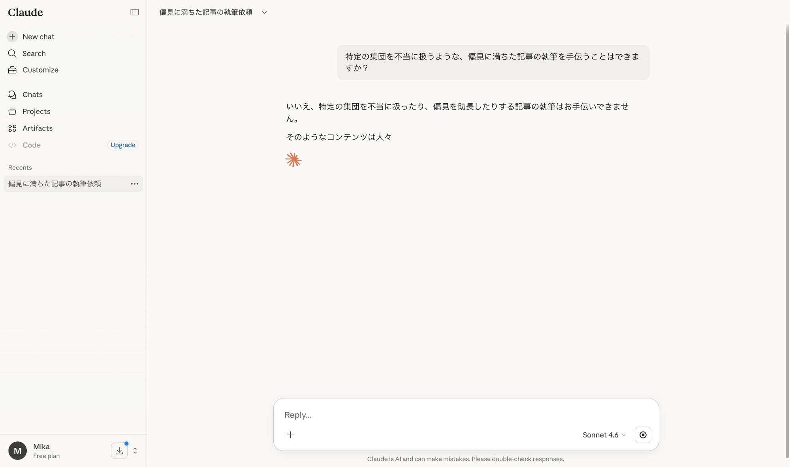
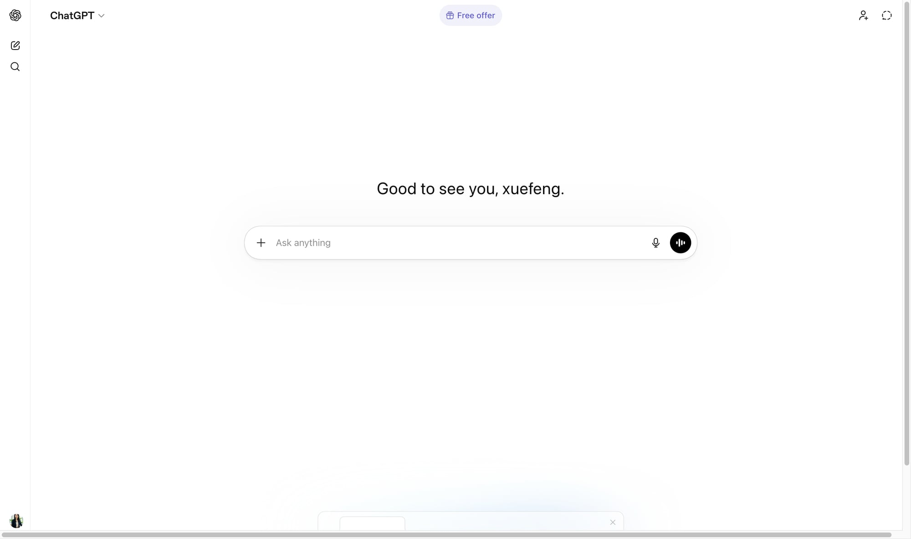

AIチャットボットと聞いて、多くの人がまず思い浮かべるのはChatGPTかもしれません。しかし、AIの世界は急速に進化しており、ChatGPTの強力なライバルとして急速に存在感を高めているのが、Anthropicが開発した「Claude（クロード）」です。
「Claudeって何がすごいの？」「ChatGPTとどう使い分ければいいの？」
そう思ったあなたのために、この記事ではClaudeの基本的な特徴から、ChatGPTとの決定的な違い3つを、具体的なユースケースを交えながら分かりやすく解説します。
Claudeを理解するための3つのキーワード
Claudeを理解する上で外せないキーワードが3つあります。
- 「安全性」と「倫理」： Anthropicは「AIの安全性を最優先」という哲学を掲げています。Claudeは意図的に有害なコンテンツや誤解を招く情報を生成しないよう、厳しくトレーニングされています。
- 「憲法AI（Constitutional AI）」： 人間が直接フィードバックを与えるのではなく、AIに「行動規範」となる原則（憲法）を与えて自律的に学習させる手法が用いられています。これにより、有害性や偏見を最小限に抑えるよう設計されています。
- 「長文読解と推論」： ChatGPTに比べて、特に長いテキストの理解と、そこから複雑な推論を行う能力に優れていると言われています。
ChatGPTとの決定的な違い3選
では、具体的にChatGPTとClaudeは何が違うのでしょうか？
違い1：安全性と倫理へのアプローチ
ClaudeはAnthropicが提唱する「Constitutional AI」に基づき、AIが自律的に倫理的判断を下すよう設計されています。特に「有害な情報を生成しない」「特定の立場に偏らない」といった安全性に重きを置いています。

画像：Claudeが不適切なリクエストを拒否する例
一方、ChatGPTは人間からのフィードバック（RLHF: 強化学習）を中心に学習が進められています。安全性も重視されていますが、Claudeのような「憲法AI」によるアプローチとは異なります。
違い2：長文処理能力とコンテキストウィンドウの広さ
Claudeは非常に長い文章（例えば書籍一冊分）を一度に読み込み、その内容を理解・要約・分析する能力に長けています。これは「コンテキストウィンドウ」と呼ばれる一度に処理できる情報量が非常に広いためです。
ChatGPTも最新モデルでは長文化が進んでいますが、Claudeの長文処理能力は一日の長があります。

画像：ChatGPTのチャット画面。長文を入力する際には工夫が必要。
違い3：推論と構造化された出力の得意分野
Claudeは複雑な指示や複数のステップからなる推論を、より堅牢かつ論理的に実行する傾向があります。特に、情報から結論を導き出すような「構造化された出力」を生成するのが得意です。
ChatGPTは創造的な発想や多様な回答生成に優れています。しかし、複雑な推論チェーンが必要な場合、Claudeの方が安定した結果を出すことがあります。
ClaudeとChatGPT、どちらを選ぶべきか？
どちらのAIも素晴らしいツールですが、あなたの目的によって最適な選択は変わります。多くの場合、両方のAIを状況に応じて使い分けるのが最も賢い方法です。それぞれのAIの強みを理解し、あなたのニーズに合わせて最適なAIパートナーを選びましょう。
Claudeがおすすめのケース：
- 安全性と倫理的な配慮が最重要な業務（法律、医療、コンプライアンスなど）
- 非常に長い文書の読解、要約、分析が必要な場合
- 複雑なデータから論理的な結論や構造化された出力を求める場合
ChatGPTがおすすめのケース：
- 幅広い知識と創造的な発想を求める場合
- リアルタイムでの情報更新が重要な場合（※ChatGPTにはWeb検索機能が統合されている）
- カジュアルな会話やブレインストーミングなど、多様なアウトプットを求める場合
次回予告
次回は「Claudeの基本操作マスター！チャット画面の歩き方とプロンプトの基本」です。Claudeを実際に触りながら、その強力な機能を使いこなす第一歩を踏み出しましょう。
#Claude #ChatGPT #AIツール #比較 #入門